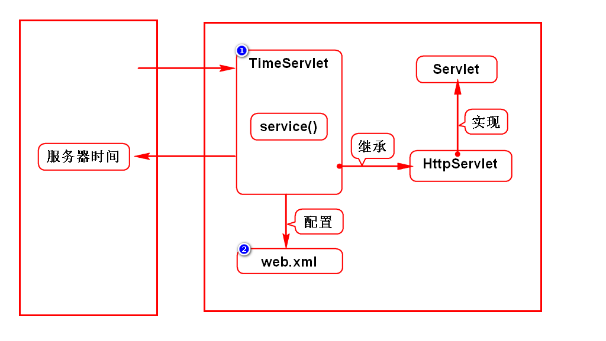
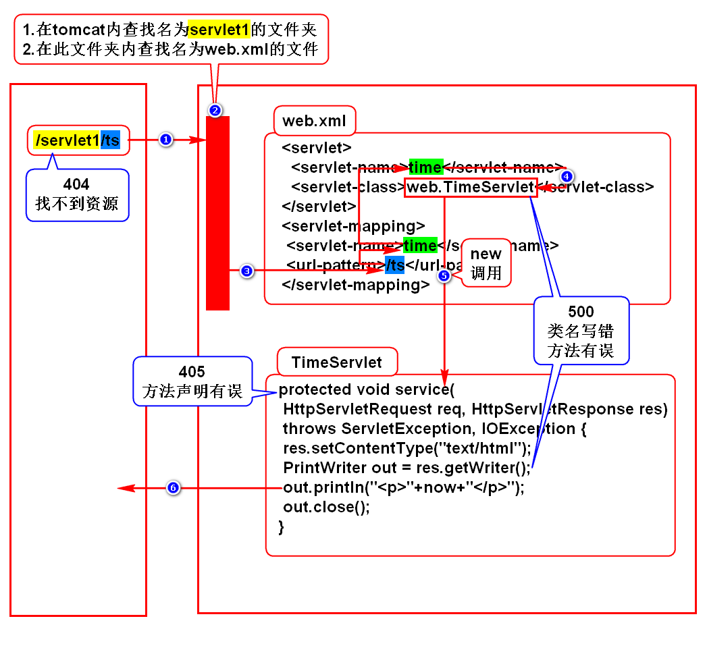

一.WEB项目的发展
1.发展规律
由单机向网络发展
由CS向BS发展
2.CS
Client Server，即客户端服务器程序
Client需要单独开发及安装
3.BS
Browser Server，即浏览器服务器程序
使用浏览器充当客户端
二.Servlet介绍
1.服务器如何保存并返回一个网页?
1.1静态网页
谁看内容都一样
新闻、百科
服务器保存并返回一个HTML即可
1.2动态网页
每个人看到的结果有差异
微博、淘宝
服务器保存一个对象，用它来动态拼HTML
在Java中这个对象就是Servlet，它有相关的规范
2.Servlet的特点(*)
存储在服务器端
要满足sun的规范，满足规范的对象叫组件
它能够给浏览器拼动态资源(网页/图片/文件)
术语：处理HTTP协议
3.什么是Servlet?
Servlet是sun推出的用来在服务器端处理HTTP协议的组件
三.服务器
1.名词
Java服务器
WEB服务器
Java WEB服务器
Servlet容器
2.本质
是一个软件
和浏览器相对应，是平等的关系
3.举例
Tomcat(Apache)
JBOSS
WebLogic
WebSphere
四.Tomcat使用方式
1.单独使用(系统上线时)
1)下载及安装
apache官网
doc.tedu.cn/tomcat
这是绿色版软件，解压缩即可用
学生机上已经下载并安装完成了
2)配置JAVA_HOME
学生机上已经配置好了
3)启动tomcat
Linux
打开/tomcat/bin,打开终端输入chmod +x *sh
打开/tomcat/bin,打开终端输入./startup.sh
windows
打开/tomcat/bin,双击startup.bat
4)访问tomcat
打开浏览器，输入
http://localhost:8080
看到一只猫则代表成功
5)关闭tomcat
Linux
打开/tomcat/bin，打开终端输入./shutdown.sh
windows
打开/tomcat/bin，双击shutdown.bat
2.通过Eclipse调用(开发时)
1)操作步骤
doc.tedu.cn/tomcat
2)重新配置时的注意事项
在server runtime界面，将tomcat选中并remove
在Eclipse左侧选择Servers项目，将其删除
五.Servlet开发步骤
1.创建WEB项目
WEB项目必须具备标准的目录结构
/webapp/WEB-INF/web.xml
2.导入JAVAEE的包
参考doc.tedu.cn/maven
3.开发Servlet
实现Servlet接口(继承于HttpServlet)
重写service()
4.配置Servlet
在web.xml中配置
5.部署项目
在Servers下选择tomcat
右键点击add and remove
从左侧将待部署项目移动到右侧
启动tomcat则完成部署
注意修改代码后要重新部署：publish
部署：拷贝的术语
6.访问Servlet
http://IP:PORT/项目名/servlet访问路径

六.程序执行过程

七.HTTP协议
1.什么是HTTP协议
就是w3c制定的一个规范
规定了浏览器和服务器如何通信以及通信的数据格式
2.如何通信
建立连接
发送请求
返回响应
关闭连接
3.数据格式
1)请求数据
请求行：请求的基础信息
消息头：对实体内容的描述
实体内容：浏览器向服务器发送的业务数据
2)响应数据
状态行：响应的基础信息
消息头：对实体内容的描述
实体内容：服务器向浏览器发送的数据
4.需要我们处理的地方
1)不需要我们处理的地方
浏览器向服务器发送数据由浏览器自动实现
服务器向浏览器发送数据由服务器自动实现
浏览器发送的数据由浏览器自己组装
服务器发送的数据由服务器自己组装
2)需要我们处理的地方
请求的业务数据和响应返回的数据由我们提供
通过request处理请求数据
通过response处理响应数据
我们需要学会如何使用request和response
补充：导包失败怎么办？
将dependency那段代码从pom.xml中删除
将.m2文件夹下，刚刚导入失败的包删除
重新导包